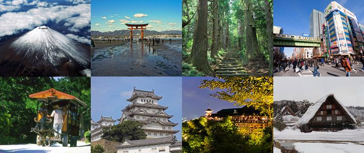

Bienvenida a Japón
¡Bienvenido a la tierra del sol naciente! Japón es un país fascinante que combina a la perfección su rica historia con la modernidad más avanzada.
Destinos Emblemáticos
Desde la serenidad de los jardines japoneses hasta la frenética actividad de las calles de Tokio, cada rincón de Japón ofrece una experiencia única. No te pierdas el majestuoso Monte Fuji o los tradicionales templos de Kioto.
Cultura y Tradición
La cultura japonesa es rica y diversa. Descubre la elegancia de las geishas, la precisión del arte del bonsái y la delicadeza de la ceremonia del té. Sumérgete en festivales coloridos y aprende sobre las artes marciales.
Planificación del Viaje
Antes de partir, es importante planificar tu viaje. Investiga los mejores momentos para visitar, explora opciones de transporte eficiente como el Shinkansen y asegúrate de probar la variada gastronomía japonesa, desde sushi hasta ramen.